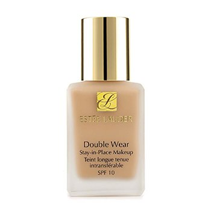

Description
Wear confidence. Double Wear Makeup is the fresh matte foundation that looks flawless whatever comes your way.
24-hour wear. Oil-free. Controls oil all day.
Sweat-, heat- and humidity-resistant.Lifeproof, waterproof foundation.
24-hour color true.Liquid foundation in a wide range of shades that flatters all.
Won’t look grey on deeper skintones.
Unifies uneven skintone and covers imperfections—buildable, medium to full coverage foundation.
Back to the Home